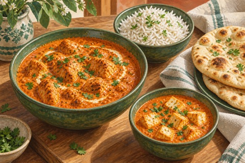
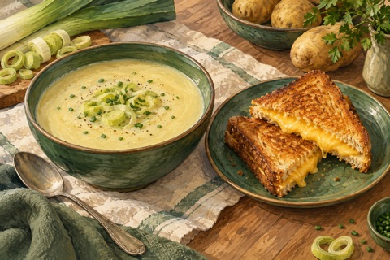
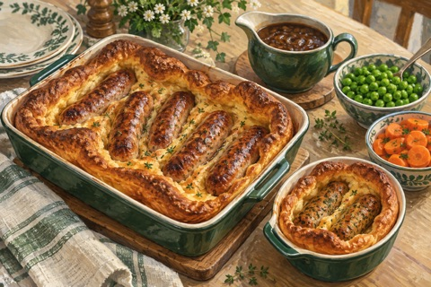
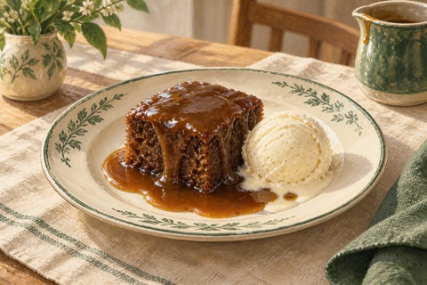

Maanantai4 ruokailijaa

Päivällinen
Kana- ja paneer-tikka masala ↗
Yhteinen mieto kastike, erikseen kypsennetyt proteiinit, basmatiriisiä ja naanleipää.
Maanantaina tikka masalaa, torstaina fish & chips ja sunnuntaina kukkakaaligratiinia lisukkeineen.
Ma–pe 4 annosta · viikonloppuna 3

Avaa resepti ruoan nimestä. Ohjeessa ovat ainekset, valmistus ja mahdollinen kasvisversio.

Yhteinen mieto kastike, erikseen kypsennetyt proteiinit, basmatiriisiä ja naanleipää.

Sosekeittoa ja pannulla paistettuja cheddarvoileipiä.
Taikinoitua vaaleaa kalaa, uuniranskalaisia, hernesosetta ja tartarkastiketta.

Makkaroita uunipannukakussa, sipulikastiketta, herneitä ja porkkanoita.

Kananmunia, papuja, kasviksia ja paahtoleipää. Kahdelle lihaa, yhdelle kasvismakkaraa.

Sinappisia cheddarleipiä, pieni annos tomaattikeittoa ja vihersalaattia.

Pieni sticky toffee pudding kolmelle, lisänä vaniljajäätelöä.

Kuusi pannulla paistettavaa aamiaisleipästä tavallisista vehnäjauhoista.

Kukkakaalia juustokastikkeessa, paahdettuja perunoita, Yorkshire-vanukkaita, kasviksia ja sipulikastiketta.